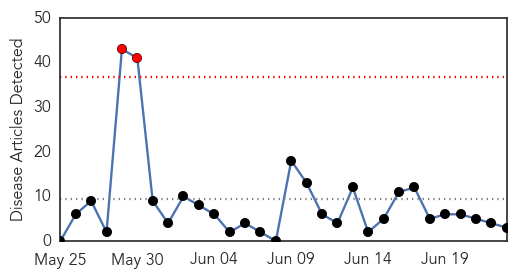
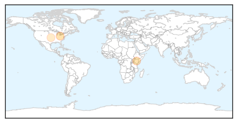
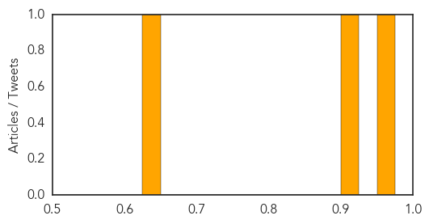
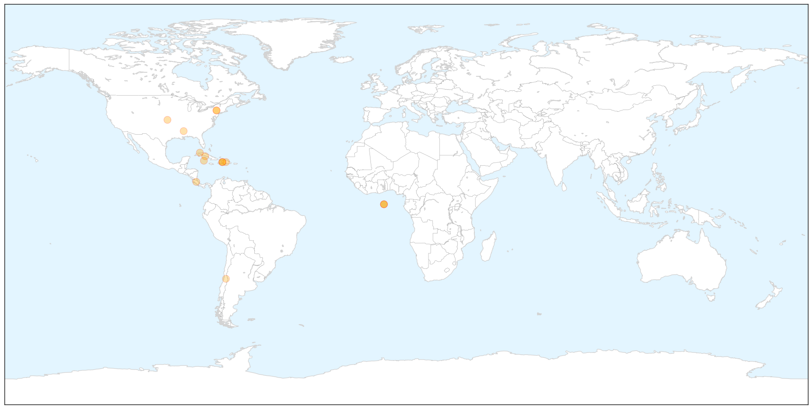

Measles
30-Day Web Trend
2 alerts, 0 warnings

30-Day Twitter Trend
0 alerts, 0 warnings

Article Locations
Article Confidences
Top Articles:
Top Tweets:
-
No tweets found for Jun 23, 2014
Chikungunya
30-Day Web Trend
8 alerts, 4 warnings

30-Day Twitter Trend
0 alerts, 0 warnings

Article Locations

X

Article Confidences

Top Articles:
- 0.999
- Mosquito-Borne Chikungunya Virus May Be Headed for U.S. – WebMD
- 0.999
- Now, chikungunya virus heads for US
- 0.999
- Cayman under chikungunya alert
- 0.999
- CDC in V.I. to help respond to chikungunya
- 0.999
- What Is Chikungunya?
- 0.999
- Mosquito-borne Virus and Health Concerns
- 0.997
- Public Health Authorities Began Preparing for Chikungunya Years Ago – Entomology Today
- 0.995
- Cuba: 6 cases of chikungunya virus in travelers
- 0.995
- Central America on alert for new epidemic
- 0.994
- Caribbean chikungunya outbreak slows; total nears 190,000
- 0.980
- Mississippi confirms first case of chikungunya virus
- 0.968
- Miss. has 1st case of mosquito-borne virus
- 0.963
- First Case of Mosquito-Borne Virus in Mississippi
- 0.894
- Chikungunya still high
- 0.822
- Health officials caution to prevent mosquito breeding and bites
- 0.746
- Tourism : Tourism Promotion and travel warnings...
Top Tweets:
-
No tweets found for Jun 23, 2014